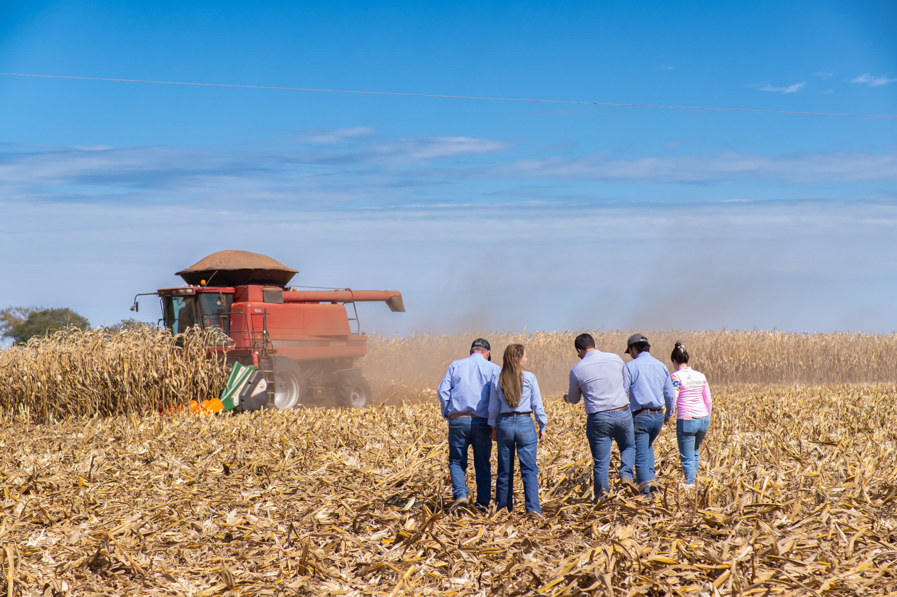
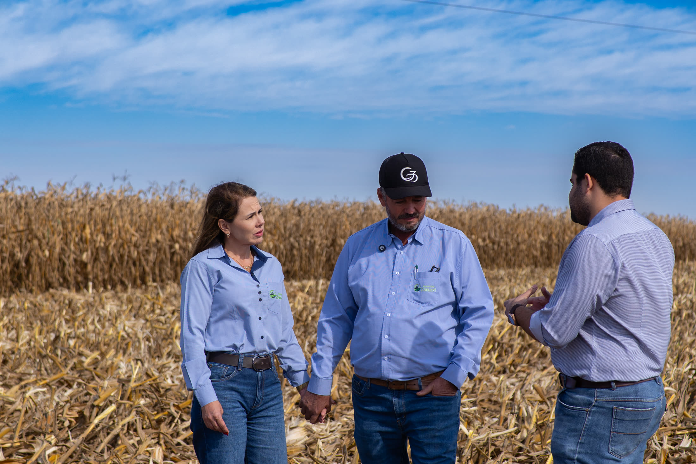

Direito do Agronegócio · Crédito Rural
A dívida não decide o futuro da sua terra. Você decide.
Você não precisa decidir isso sozinho. Existe quem pense com você antes do banco decidir por você.
Avaliação inicial sem custo. Sigilo total.

Quem cuida do seu caso
Lucas não vende processos. Ele protege patrimônio, família e legado.
O trabalho começa antes da urgência: estudar o Plano Safra, acompanhar as decisões do Banco Central e do STJ sobre crédito rural, entender o mercado — para chegar até você com clareza, não com promessas.
Cada caso é tratado como o que realmente é: uma decisão de longo prazo para uma família que vive da terra, não uma estatística de escritório.
Conhecer a história e o método →Como ajudamos
Atuação especializada em Direito do Agronegócio
Renegociação de Dívida Rural
Revisão de contratos e cédulas de crédito rural, defesa em execuções e proposta de renegociação estruturada junto às instituições financeiras.
Ver detalhes →Contratos Agrários
Compra e venda de imóvel rural, arrendamento, parceria e barter — contratos bem construídos evitam disputas antes que elas comecem.
Ver detalhes →Gestão Financeira do Produtor
Renegociar prazo e juros não resolve se não houver capacidade real de pagamento. Produtividade real e onde o dinheiro está vazando.
Ver detalhes →
“Segurança e clareza, do primeiro contato ao último detalhe do contrato.” Como o escritório trabalha
- Segurança
- Calma
- Racionalidade
- Estratégia
- Presença
- Respeito
Radar Agro